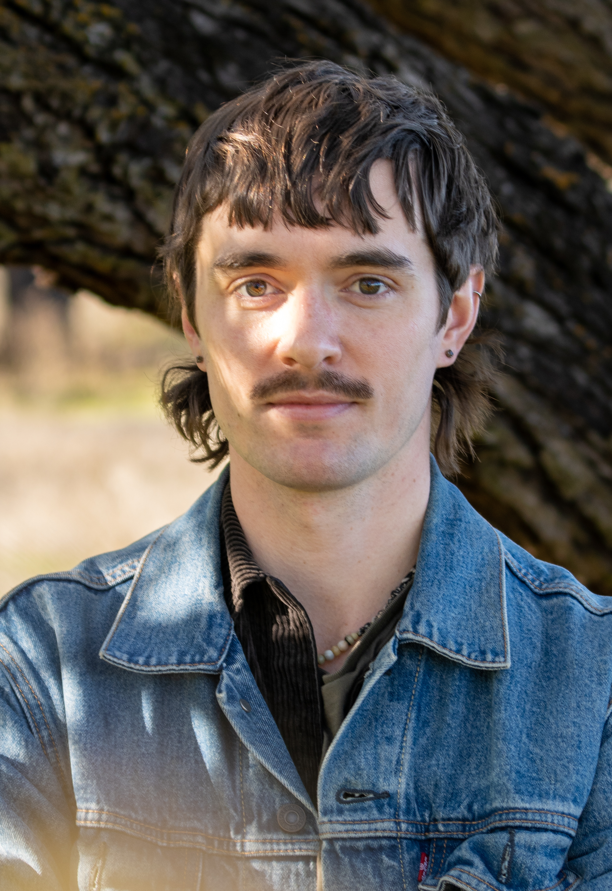
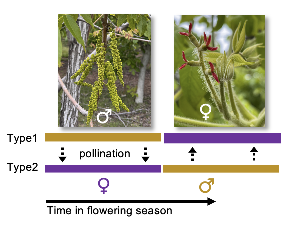
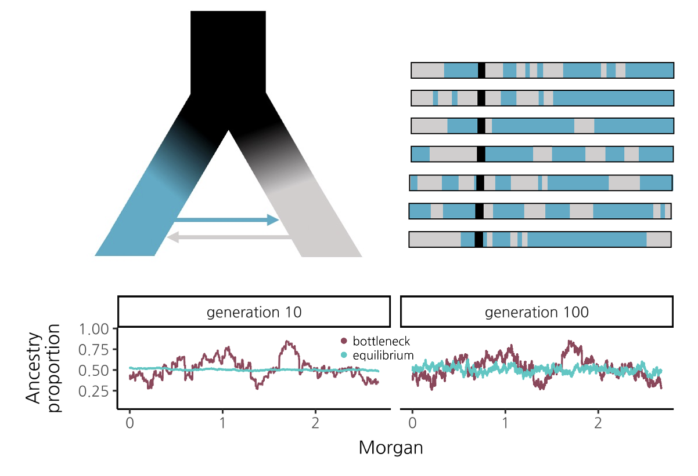
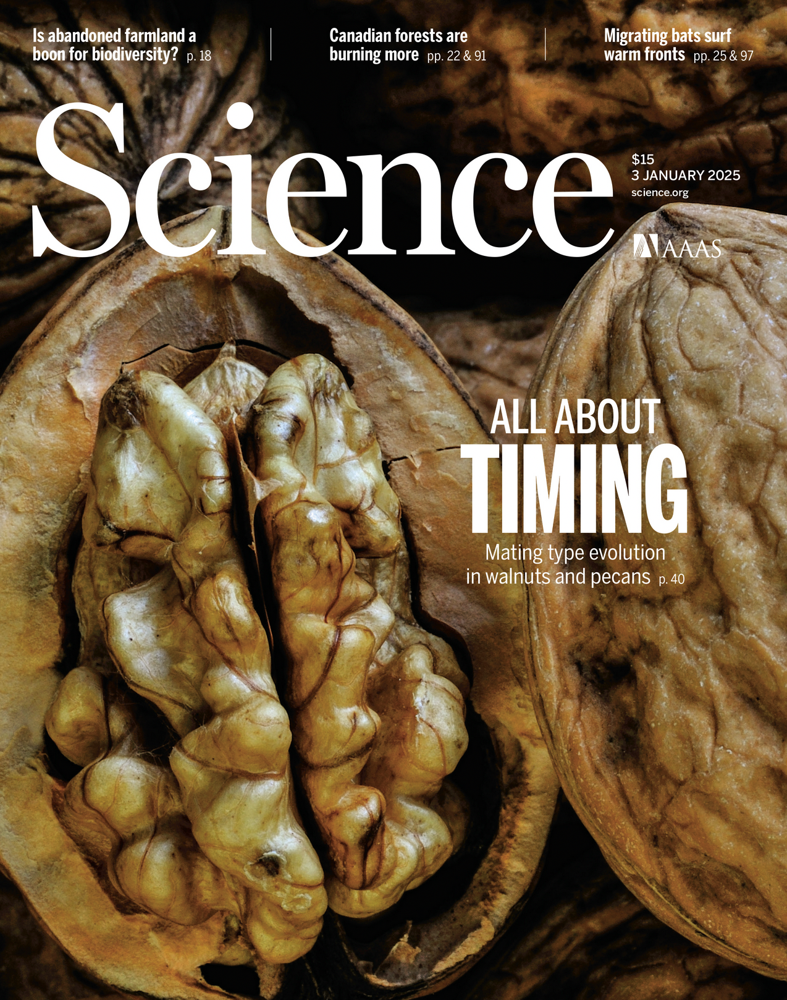
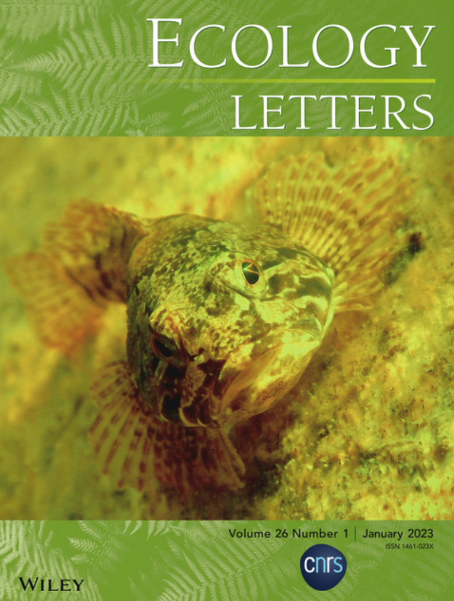

I'm an evolutionary geneticist interested in how natural selection shapes genetic variation and organismal adaptations. My research focuses on the evolution, ecology, genomics, and genetic regulation of mating systems, using flowering plants as models for understanding the resolution of sexual conflict in hermaphrodites and the role of balancing selection in maintaining alternate reproductive strategies in natural populations. More broadly I work on questions related to hybridization, population divergence, and temporal niche adaptation. I'm currently a Miller Postdoctoral Fellow at UC Berkeley where I work with Noah Whiteman and Ben Blackman.

Hermaphroditic organisms must balance investment into male and female reproduction and avoid conflict between these two components of fitness. My work investigates the convergent evolution of reciprocal sex alternation strategies in flowering plants as a window into the genetic basis of novelty and genomic consequences of mating systems.

Although species are traditionally defined as reproductively isolated groups, hybridization is common and has important evolutionary consequences. My research has investigated how the dynamics of evolutionary forces acting in hybrid populations impacts the distribution of ancestry in the genome.

- Groh JS, Soares dos Santos MF, Avila de Dios E, Ackerman G†, Solares E, Iturrieta RA, Focht E, Seymour D, Gaut BS, Arpaia ML, Coop G. 2025. Balanced polymorphism in a floral transcription factor underlies an ancient rhythm of daily sex alternation in avocado. bioRxiv. In Review. doi ↗
- Roesti M, Groh JS, Jones F, Peichel CL, Schluter D. 2026. Reply to MacColl: Repeated evolution from standing genetic variation. Proceedings of the National Academy of Sciences 123:e2605003123.
- Groh JS, Ackerman G†, Wenzel M, Coop G. 2025. Distinct haplotypes and reversed dominance at a single-gene balanced polymorphism controlling heterodichogamy in two genera of wingnuts. Current Biology 35:1–18. doi ↗
- Roesti M, Groh JS, Jones F, Peichel CL, Schluter D. 2025. A species interaction kickstarts ecological speciation in allopatry. Proceedings of the National Academy of Sciences 122:e2506625122. doi ↗
-
Groh JS, Vik DC†, Davis M, Stevens KA, Brown PJ, Langley CH, Coop G. 2025. Ancient structural variants control sex-specific flowering time morphs in walnuts and hickories. Science 387:eado5578. Cover article. doi ↗

- Langdon QK, Groh JS, Aguillon SM, et al. 2024. Swordtail fish hybrids reveal that genome evolution is surprisingly predictable after initial hybridization. PLoS Biology 22:e3002742. doi ↗
- Groh JS, Coop G. 2023. The temporal and genomic scale of selection following hybridization. Proceedings of the National Academy of Sciences 121:e2309168121. doi ↗
- James ME, Allsopp RN†, Groh JS, Kaur A, Wilkinson MJ, Ortiz-Barrientos D. 2023. Uncovering the genetic architecture of parallel evolution. Molecular Ecology 32:5575–5589. doi ↗
-
Roesti M, Groh JS, Blain SA, Huss M, Rassias P, Bolnick DI, Stuart YE, Peichel CL, Schluter D. 2022. Species divergence under competition and shared predation. Ecology Letters 26:111–123. Cover article. doi ↗

- James ME, Arenas-Castro H, Groh JS, Allen SL, Engelstädter J, Ortiz-Barrientos D. 2021. Highly replicated evolution of parapatric ecotypes. Molecular Biology and Evolution 38:4805–4821. doi ↗
- Groh JS, Cronk QC. 2020. Phenotypic evidence for an extensive mosaic hybrid zone between two species of columbine, Aquilegia flavescens and A. formosa. Botany 98:459–467. doi ↗
- Groh JS, Percy DM, Björk CR, Cronk QC. 2019. On the origin of orphan hybrids between Aquilegia formosa and Aquilegia flavescens. AoB Plants 11:ply071. Editor's Choice. doi ↗
J.S.Groh_CV.pdf
Download